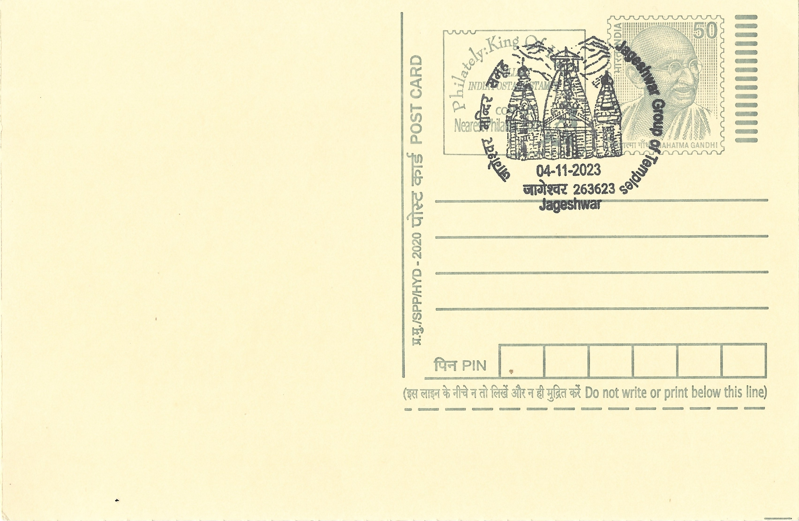

Jageshwar Group of Temples
जागेश्वर मंदिर समूह


The name Jageshwar is derived from "Jagat Eshwar" or "Lord of the World," an epithet of Shiva, to whom the principal shrine of the complex is dedicated. Local tradition holds that the valley was once the site of a dense deodar forest where sages performed penance, and that Shiva appeared here in a form that came to be worshipped as one of the twelve Jyotirlingas, though this identification rests on regional belief rather than inclusion in the more widely accepted pan-Indian list of twelve. The site's association with ascetic practice and Shaiva devotion made it a natural focus for temple building once organized kingdoms rose to power in the Kumaon hills, and that religious reputation has persisted through the many centuries of construction and rebuilding that followed.
Jageshwar is recognized as one of the largest and most important clusters of early medieval stone temples in the central Himalaya, comprising roughly 124 to 125 structures of varying size packed into a comparatively small, forested valley near Almora. Its significance is both religious and archaeological: it functions as an active Shaiva pilgrimage destination while simultaneously serving as a key reference site for scholars studying the evolution of temple architecture in the Kumaon region between the post-Gupta and late medieval periods. The Archaeological Survey of India has declared the complex a monument of national importance, affording it statutory protection, and it is frequently discussed alongside Dwarahat and Baijnath as one of the three major Katyuri-era temple concentrations in Uttarakhand, though Jageshwar is by far the largest of the three.
Construction at Jageshwar is generally attributed to the Katyuri dynasty, which controlled much of present-day Uttarakhand between roughly the 7th and 11th centuries CE and were committed patrons of Shaivism, with building activity continuing under the later Chand rulers of Kumaon into the medieval period. Inscriptions record renovation work during the reign of the Katyuri king Shalivahandev, indicating that the complex was maintained and expanded rather than built in a single phase. The temples follow the Nagara architectural idiom, built of dressed local stone with curvilinear shikhara towers capped by an amalaka and kalasha, and appear in several sub-styles including Latina, Phamsana and Valabhi roof forms; most enshrine a stone lingam at their core, often accompanied by subsidiary images of deities such as Durga, Ganesha, Surya and Kubera.
Among the individual shrines, the Dandeshwar temple is considered the largest structure in the complex and is notable for a shikhara built up in distinct receding tiers, a variant treatment that sets it apart from the more conventional towers nearby, while the Mrityunjaya temple is generally regarded as the oldest surviving shrine on the site and is dedicated to Shiva in his aspect as conqueror of death. Other named shrines include the Kuber, Nava-graha, Chandika and Nanda Devi (or Nau Durga) temples, along with a rare pyramidal-roofed structure, giving the cluster an unusual architectural variety within a single sacred precinct. The site draws its largest crowds each year during the Shravan Mela, a month-long monsoon-season fair held in July and August that coincides with the period of heightened Shiva worship, as well as during the Maha Shivaratri fair in early spring.
The Jageshwar complex falls within the Jageshwar Dham cluster of temples, which also extends to the smaller, more remote Vriddha Jageshwar (Budha Jageshwar) shrine on a ridge above the main valley, itself associated with a separate strand of local legend. Conservation and upkeep of the protected monuments are carried on under the Archaeological Survey of India's Dehradun circle, which maintains the stonework and the surrounding deodar grove that gives the site its distinctive forest setting. The temple cluster today functions simultaneously as a working pilgrimage center administered with local temple committees and as a scheduled archaeological site visited by historians and tourists travelling the Kumaon circuit out of Almora.
| Date of Introduction | November 4, 2023 |
|---|---|
| Address | Branch Postmaster, |
| Jageshwar BO, | |
| Almora (dt.), Uttarakhand - 263623. |